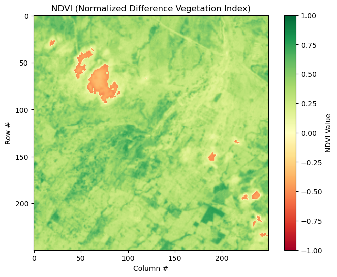

import fionaGISC 6317 Lab 9 Homework
Ashleigh Frank
airports = fiona.open("C:\\Users\\ashle\\Downloads\\lab9\\mi_airports.shp")
airports<open Collection 'C:\Users\ashle\Downloads\lab9\mi_airports.shp:mi_airports', mode 'r' at 0x1cf7d8bd1d0>num_features = len(airports)
geom_type = airports.schema['geometry']
print(f"Number of features: {num_features}")
print(f"Geometry type: {geom_type}")Number of features: 539
Geometry type: Pointingham_airports = [f for f in airports if f['properties']['COUNTY'] == 'Ingham']
print(f"Number of airports in Ingham County: {len(ingham_airports)}")Number of airports in Ingham County: 10highest_airport = max(airports, key=lambda f: f['properties']['ELEVATION'])
name = highest_airport['properties']['NAME']
elevation = highest_airport['properties']['ELEVATION']
county = highest_airport['properties']['COUNTY']
print(f"The airport with the highest elevation is {name} in {county} County with an elevation of {elevation} feet.")The airport with the highest elevation is Marenisco Landing Field in Gogebic County with an elevation of 1638 feet.import rasterioraster = rasterio.open("C:\\Users\\ashle\\Downloads\\lab9\\LE70220492002106EDC00_stack.gtif")
raster
raster.count8red = raster.read(3).astype('float32')
nir = raster.read(4).astype('float32')
import numpy as np
# Ignore divide by zero warnings
np.seterr(divide='ignore', invalid='ignore')
ndvi = (nir - red) / (nir + red)
print (ndvi)[[0.37269557 0.39126167 0.44422984 ... 0.36966395 0.4064792 0.51700085]
[0.32503662 0.3498452 0.39703378 ... 0.38437596 0.39950526 0.42797118]
[0.33222115 0.3498452 0.373062 ... 0.37700787 0.37754792 0.415 ]
...
[0.27515724 0.27947816 0.26802585 ... 0.29664874 0.3252385 0.3444754 ]
[0.28249028 0.28341427 0.27947816 ... 0.37880737 0.3679616 0.2972973 ]
[0.29672006 0.30234933 0.28967643 ... 0.3462555 0.31332746 0.27264014]]import matplotlib.pyplot as plt
plt.figure(figsize=(8, 6))
ndvi_plot = plt.imshow(ndvi, cmap='RdYlGn', vmin=-1, vmax=1)
plt.title('NDVI (Normalized Difference Vegetation Index)')
plt.colorbar(ndvi_plot, label='NDVI Value')
plt.xlabel('Column #')
plt.ylabel('Row #')
plt.show()